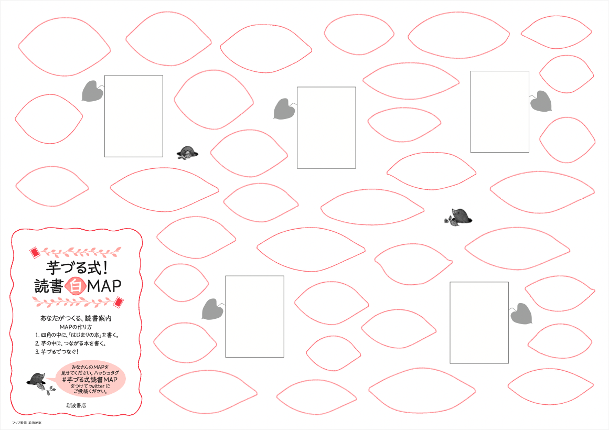
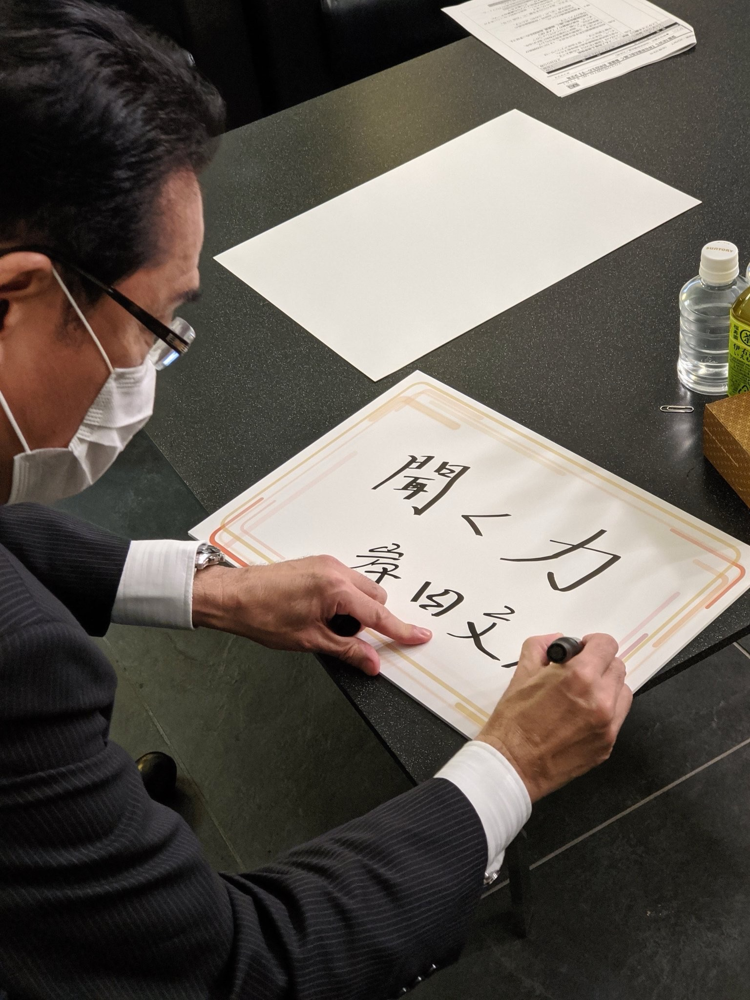

![]()
| 項目 | 比率 | 到達目標 |
|---|---|---|
| リーディング・アサインメント | 30 | 4 |
| 授業の感想 | 30 | 1;2 |
| レポート（2種） | 30 | 1; 2; 3; 4; 5 |
| ディスカッション（受講態度を含む） | 10 | 1; 2 |
政治学概論Ⅰ《2025》
#1 イントロダクション
December 3, 2025
Ⅰ. 自己紹介
授業の感想
あのイーハトーヴォのすきとおった風、夏でも底に冷たさをもつ青いそら、うつくしい森で飾られたモリーオ市、郊外のぎらぎらひかる草の波。またそのなかでいっしょになったたくさんのひとたち、ファゼーロとロザーロ、羊飼のミーロや、顔の赤いこどもたち、地主のテーモ、山猫博士のボーガント・デストゥパーゴなど、いまこの暗い巨きな石の建物のなかで考えていると、みんなむかし風のなつかしい青い幻燈のように思われます。では、わたくしはいつかの小さなみだしをつけながら、しずかにあの年のイーハトーヴォの五月から十月までを書きつけましょう。
あのイーハトーヴォのすきとおった風、夏でも底に冷たさをもつ青いそら、うつくしい森で飾られたモリーオ市、郊外のぎらぎらひかる草の波。またそのなかでいっしょになったたくさんのひとたち、ファゼーロとロザーロ、羊飼のミーロや、顔の赤いこどもたち、地主のテーモ、山猫博士のボーガント・デストゥパーゴなど、いまこの暗い巨きな石の建物のなかで考えていると、みんなむかし風のなつかしい青い幻燈のように思われます。では、わたくしはいつかの小さなみだしをつけながら、しずかにあの年のイーハトーヴォの五月から十月までを書きつけましょう。
Ⅱ. シラバス
シラバス ＞ 授業の目的
ねらい
本授業は、政治学に関する入門的・基礎的知識を学ぶことを目的としています。日々のニュース報道や新聞報道で見聞するように、「政治」は私たちの生活に非常に密着したものです。しかし、政治が具体的にどのような仕組み・メカニズムのもとに成り立っているかは、理解しづらく、私たちを「政治」から遠ざけるひとつの原因となっています。この授業では、政治に関わる基本概念の理解を通して、政治や政策を動かす仕組み・メカニズムについて説明します。
カリキュラム上の位置づけ
この授業は、免許法該当科目（教科に関する科目）の「政治学」に分類されている選択必修科目です。
シラバス ＞ 授業の到達目標
- 受講生が、国民主権を中心とした公民分野の基礎的知識を得て、初学者に対してわかりやすく説明することができる。（公民）
- 受講生が、選挙制度、政党、政治体制といった政治学の基礎的知識を得て、初学者に対してわかりやすく説明することができる。（基礎的関心）
- 受講生が､政治学の諸概念について､自分なりの視点を加味した､関係図を作成することができる（基礎的関心）
- 受講生が、政治学ならびに公民分野に関わる基本的な資料、文献を読みこなすことができる。（論理的思考・文献読解能力）
- 受講生が、1及び2で得た知識を背景に、日々のニュース報道や新聞報道をより深く、また相対的に理解したうえで、自分自身の意見や解釈を、確かな根拠を明示しながら、明快に記述することができる。（論理的思考・記述能力）
シラバス ＞ 授業の進め方
授業の進め方
初回から第4回目までの授業はオンデマンド配信にて実施します（初回・第2回は12月、第3回・第4回は1月を予定）｡それ以降の授業は対面で実施いたします（2026年2月を予定）｡
授業はスライド資料を用いておこないます。受講生は、各単元に関連する指定文献を事前に読み、それについて要約や感想を書くことが求められます（リーディング・アサインメント（＝文献予習））。また、Googleフォームを用いて、定期的に受講者の授業理解を確認します（授業の感想）。
シラバス ＞ 授業キーワード
授業キーワード
- 福祉国家
- 国民主権
- 選挙制度
- 政治制度
- 政治過程
- 政官関係
- 地方自治
シラバス > 成績評価の方法およびその基準
シラバス > 成績評価の方法およびその基準
- 授業には3分の2以上の出席を必要とします
- 評価基準は、授業の到達目標に準じます
- 普通に取り組めば80点以上とれるように、配点しています
- レポートはSかAを決めるために使っています（使いたいです）
- 以上のことは、レポート評価は厳し目（各レポート8点/15点満点を標準的なレポートとして評価し、それ以上、それ以下で点数をつけます）、その他は甘め目であることを含意します
- すべての授業終了後に実施する授業アンケートも「授業の感想」の一つとして扱い､評価の対象とします
- 出席点はありません
- 出席回数は足切りのためのみに使います
シラバス > 単位についての考え方
Note | 予習復習も単位取得に必要な時間です
- 授業出席時間だけでは、単位取得時間を満たしません
- 学修の観点だけでなく、大学制度上、予習復習は必須です
1単位＝45時間の学修の考え方（「大学設置基準」）
我が国の大学教育は単位制度を基本としており、1単位あたり45時間の学修を必要とする内容をもって構成することが標準とされています。ここでいう１単位あたりの学修時間は、授業時間内の学修時間だけではなく、その授業の事前の準備学修・事後の準備復習を合わせたものとなっています（文部科学省高等教育局 (n.d.)）
2単位14週間の授業の場合
- 90時間の学修を要し、うち1/3の30時間が授業時間
- 残りの60時間が授業外での学修時間となる
- 慣例的に概算計算される
科目概要 > 成績評価 > 芋づる式マップ
芋づる式マップ（解答用紙）
科目概要 > 成績評価 > 芋づる式マップ

芋づる式マップ（記入例）
シラバス ＞ テキストなど
テキスト
- 使用しません
参考文献
- 授業中に適宜紹介します
その他授業資料等
- レジュメ、スライド資料などの授業資料は､特設Webページ（後日、連絡します）を通して配布します。リーディング・アサインメントで用いる著作権のある文献についてはMoodleにアップロードいたします。
シラバス > オフィスアワー等
学生からの質問への対応方法等
- 対面授業の期間中は､授業前後に質問､相談に応じます
- この期間以外に、質問・連絡が必要な場合は、社会科教育講座主任の諸岡先生に御連絡ください
スケジュール
| 回 | 日付 | コマ | 時間 | 開催形態 | タイトル | キーワード |
|---|---|---|---|---|---|---|
| 1 | 12-03 | - | - | オンデマンド | イントロダクション | 成績評価；中等教育と高等教育 |
| 2 | 12-17 | - | - | オンデマンド | 福祉国家と現代日本の課題 | 福祉国家；福祉政策；小熊モデル；エスピン＝アンデルセンモデル |
| 3 | 01-07 | - | - | オンデマンド | 国民主権と天皇制 | 国民主権；象徴天皇；公的行為 |
| 4 | 01-21 | - | - | オンデマンド | 選挙制度と政治意識 | 選挙制度；セイリアンス；有効性感覚 |
| 5 | 02-02 | 2 | 10:25-12:05 | 対面 | 民主主義と全体主義（１） | リベラル・デモクラシー；全体主義；自由；責任 |
| 6 | 02-02 | 3 | 13:00-14:40 | 対面 | 民主主義と全体主義（２） | ジョナサン・グレイザー監督『関心領域』 |
| 7 | 02-03 | 2 | 10:25-12:05 | 対面 | 政治制度と政治過程（１） | 立法制度；55年体制；ネオ55年体制 |
| 8 | 02-05 | 3 | 13:00-14:40 | 対面 | 政治制度と政治過程（２） | フリーライダー；イシュー・セイリアンス；利益団体；利益；代表 |
| 9 | 02-05 | 2 | 10:25-12:05 | 対面 | 前半のまとめ／国会中継 | グループワーク；ディスカッション |
| 10 | 02-05 | 3 | 13:00-14:40 | 対面 | 行政と政官関係（１） | 官僚制；階統制；レッド・テープ；最大動員モデル |
| 11 | 02-06 | 2 | 10:25-12:05 | 対面 | 行政と政官関係（２） | 政官関係；官僚の類型 |
| 12 | 02-06 | 3 | 13:00-14:40 | 対面 | 地方自治（１） | 中央地方関係；自治事務；法定受託事務 |
| 13 | 02-07 | 2 | 10:25-12:05 | 対面 | 地方自治（２） | 地方政府；三割自治論；平成の大合併 |
| 14 | 02-07 | 3 | 13:00-14:40 | 対面 | 後半のまとめ／ディスカッション | 後半のまとめ／ディスカッション2 |
- オンデマンドについては配信予定日です。若干､前後する可能性があります
- ディスカッション1（2月5日3限）は、国会中継の視聴と議論を予定しています
- ディスカッション2（2月7日3限）は、レポート課題2の発表と議論を予定しています
リーディングアサインメント
| 回 | 授業日 | 著者 | タイトル | 〆切 |
|---|---|---|---|---|
| 1 | 12-03 | テレ東BIZ | 春風亭一之輔の1票の流儀(動画コンテンツ) | - |
| 2 | 12-17 | 上野千鶴子ら | 座談会 経産省 次官・若手プロジェクト「不安な個人、立ちすくむ国家」をめぐって | 2025-12-15 |
| 3 | 01-07 | 原武史ら | 座談会 これからの象徴天皇制を考える | 01-05 |
| 4 | 01-21 | - | - | 01-19 |
| 5 | 02-02 | - | - | 01-30 |
| 6 | 02-02 | - | - | 01-30 |
| 7 | 02-03 | TBSラジオ「セイジドウラク」 | Ep.11「澤田記者が参議院を好きすぎる件」（音声コンテンツ） | - |
| 8 | 02-05 | 朝日新聞 | 子犬・子猫、健やかに育つために（2019年9月25日） | 01-30 |
| 9 | 02-05 | - | - | - |
| 10 | 02-05 | 真渕勝 | 公共的人間 | 02-03 |
| 11 | 02-06 | - | - | 02-03 |
| 12 | 02-06 | 金井利之 | 財政調整制度と「ふるさと納税」制度 | 02-03 |
| 13 | 02-07 | 読売新聞 | ［平成時代］大合併 残した課題（2019年4月9日） | 02-03 |
| 14 | 02-07 | - | - | - |
- 上記の指定文献は、著作権の都合上、Moodle上に置いておきます
- 提出先はGoogleフォームです
- 各回3点。2月13日23:59まで遅延提出を認めますが、得点は1点となります
Ⅲ. 中学の「公民」／高校の「公共」／大学の「政治学」
「公民」／「公共」／「政治学」：中等教育と高等教育の違い
中等教育：
- 語句解説が中心
- 制度についての記述
- 例：衆議院の優越とは
- 例：三権分立とは
- 「政治的中立性」の要請
- 規範と記述を峻別しない
- 建前ばかり
- 理想と現実のギャップ
高等教育（研究者）：
- 制度の運用と帰結までを対象
- 例：衆議院の優越の行使回数､条件
- 学問の自由
- （批判を含む）解釈を重視
- 例：三権分立は機能しているか？
- 機能していないのであれば批判の対象
「公民」／「公共」／「政治学」：政治的中立性
学校における政治的中立性についての政府公式見解
〔教育基本法第14条〕第2項は、「公の性質」を有する学校においては、その政治的中立性を確保するため、教育内容に一党一派の政治的な主義・主張が持ち込まれたり、学校が政治的活動の舞台となるようなことは厳に避けなくてはならないことから、学校教育における党派的政治教育の禁止を規定するものである
- ➡ 政治に関する解釈、評価を避ける傾向に
- ➡「客観的事実」の重視
- ➡️両論併記
- ➡️「「政治的中立」は政治的意見もたないこと」
- ➡️主権者教育に反する
グループワークの心理的安全性
重要 | 「この場では安心して意見を言える」という感覚が何より大切です
- グループワークで話したことは外に持ち出さない
- 相手の意見を批判しない（マウンティング行為を含む）
- グルームのメンバー全員が「つながり」を生む声かけを心がける（「◯◯さんはどう思いますか？」）
「公民」／「公共」／「政治学」：試験の「政治的中立性」
Q1. 現在の首相の氏名を漢字で書きなさい
Q2. 現在の首相の選挙区はどこですか
Q3. 現在の首相は酒豪である。○か×かで答えなさい
Q4. 現在の首相の父親の職業を以下の選択肢から選びなさい
- A. 菓子職人（もみじまんじゅう）
- B. 広島カープの選手（投手）
- C. 衆議院議員
- D. 社会科教諭（中学校）
Q5. 現在の首相は「聞く力」をもってるかどうか､あなたの意見を根拠をもって論じなさい

出典：kishida230（旧Twitter）
「公民」／「公共」／「政治学」：歴史教育の場合
映画『教育と愛国』
- 監督：斉加尚代
- 公式サイト
2006年に改正された教育基本法や、太平洋戦争の記述内容に関する教科書問題、歴史教育に携わる関係者への抗議や中傷など、教育と政治の問題をインタビューを交えながら追う。
- ➡️政治からの圧力
- ➡️政治への忖度

「公民」／「公共」／「政治学」：「政治的中立性」の研究
「政治的中立性」を遵守すべきか
- 国際比較
- 日本の過剰な「政治的中立性」遵守の実態
諸外国と日本では､「教育の政治的中立性の考え方」が大きく異なっており､「教員が自身の政治的意見を発露しないこと」を政治的中立性の前提と考える日本が例外的ともいえる（秦 and 酒井 (2021, p. 24)）
- 実験（結果）
- 若者の政治関心を高める有効策
- 教育における政治的中立性の原則を緩めるべき
- ただし、教員の政治傾向が生徒の政治傾向に一定程度、伝播することを考慮すべき
「公民」／「公共」／「政治学」：政治学者ってどんな人？
1. 政治学者の共通点
- 素直じゃない（簡単には信じない）
- （新しい事実・解釈を面白がる）
「公民」／「公共」／「政治学」：政治学者ってどんな人？
2. 政治経験（政治史）の共有
- ソクラテスの民主主義批判
- 多数決で決めたことは「正しい」といえるのか？
- 「正しさ」の探究（政治学の出発点）
- Cf. カリクレス：正義は勝者の自己正当化
- プロタゴラス：人間はそれぞれが尺度をもつ
- ナチスの台頭とユダヤ人虐殺
- もっとも民主的な国家がなぜ、もっとも抑圧的な統治の扉を開いたのか？
- 民主主義の鬼子としての全体主義
「公民」／「公共」／「政治学」：政治学者ってどんな人？
3. 規範と実証をめぐる政治学者の対立
- 規範（こうあるべき）
- 規範内の論理
- 例：政治はどうあるべきか；自由の条件とは何か
- 規範間の衝突
- 例：自由と平等は両立するか
- 実証（こうある／こうあった／（こうあるかもしれない））
- 一般的傾向の発見
- 一般化：因果推論
- 計量分析；決定的事例；逸脱事例
- 運用の実態の解明
- 制度よりも、慣習などインフォーマルな実態を重視
- 例：長期政権の条件；政権交代の実態
「公民」／「公共」／「政治学」
- 外来語という厄介な問題
- 例：Rightばかり主張する
- 正しいことばかり主張する（原語の語感）
- 権利ばかり主張する（日本語の語感）
- 例：Rightばかり主張する
グループワークの心理的安全性
禁止 | マウンティング行為
- 知識ひけらかし型：「この本は原著で読んでるから、翻訳はちょっとね」/ 「作者の別の論文を読んでないと本当の意味は分からないよ」
- 先取り型：「あー、この後の展開は◯◯だから、そこまで読まないと面白さはわからないよ」/「私、もう続編も全部読んでるから」
- 比較優位型：「その感想は初心者っぽいね」 / 「自分はもっと難しい本を普段読んでるから、この本は物足りないかな」
- 発言の矮小化型：「その見方は浅いよ、本当はこう読むべきなんだ」 / 「その感想はよくあるけど、重要なのは別のところだよ」 / 「それってあなたの感想ですよね」
Ⅳ. おすすめのニュース系番組・記事と教科書
おすすめのニュース系番組
ラジオ／Podcast
- 朝日新聞ポッドキャスト「報談」
- 朝日新聞ポッドキャスト「ニュースの現場から」
- 朝日新聞ポッドキャスト「一緒に新聞をめくろう！」
- TBSラジオ「荻上チキSession」
- 特集「ニュース座談会○月場所」
- 特集「国会論戦珍プレー・好プレー！」
- TBSラジオ「セイジドウラク」
おすすめのニュース系記事
インターネットサイト
- なんJ政治ネタまとめ
- 政治リテラシーの高いなんJブログやね
- 政治リテラシーを上げて行こう
- 「政界地獄耳」（『日刊スポーツ』）
政治の世界では日々どんなことが起きているのでしょう。表面だけではわからない政界の裏の裏まで情報を集めて、問題点に切り込む文字通り「地獄耳」のコラム。けして一般紙では読むことができません。きょうも話題騒然です。
おすすめのニュース系記事
時事論評（研究者ら）
おすすめの教科書
- 法学部、政策系学部の政治学入門で、一般的に使われている教科書を紹介します
教科書
- 砂原庸介・稗田健志・多湖淳『政治学の第一歩』（有斐閣、2015）
- 犬塚元・河野有理・森川輝一『政治学入門：歴史と思想から学ぶ』（有斐閣、2023）
- 飯田高ら『世の中を知る，考える，変えていく：高校生からの社会科学講義』（有斐閣、2023）
おすすめの本
新書
- 境家史郎『戦後日本政治史：占領期から「ネオ55年体制」まで』（中公新書､2023年）
古典
- プラトン『ゴルギアス』（中澤務訳､光文社古典新訳文庫､2022年）
- J. S. ミル『自由論』（関口正司訳､岩波文庫､2020年）
- E. H. ノーマン『クリオの顔：歴史随想集』（大窪愿二編訳､岩波文庫､1986年）
引用文献
引用文献
文部科学省高等教育局, n.d. 大学における教育内容・方法の改善等について.
秦正樹., 酒井和希., 2021. 教育における政治的中立性が若年層の政治的態度に及ぼす影響. 生活経済政策 (288), 22–26.